Skrzynia Peleryn
Służy do przechowywania zwykłych Peleryn Męstwa.
Patch notes
Dodaliśmy nowe skrzynie przeznaczone do wygodnego przechowywania Peleryn Męstwa. Możecie je zakupić u Handlarki Różności.
Służy do przechowywania zwykłych Peleryn Męstwa.

Służy do przechowywania Peleryn Męstwa z plusem.
Umieszcza Peleryny Męstwa w odpowiedniej skrzyni.
Wyciąga Peleryny Męstwa ze skrzyni.
Dodaliśmy Handlarza Tygodniowego, u którego będziecie mogli zakupić różne przedmioty w limitowanej ilości.
Przykładowe przedmioty
U handlarza będzie dostępny wariant już ulepszony do poziomu +9.
Czas trwania 10d
Pier. z Kości Smoka - Wartość Ataku +75
Pier. z Kości Tygrysa - Silny przeciwko potworom +10%
Czas trwania 7d - upływa cały czas
Po założeniu obu pierścieni jednocześnie aktywuje się Synergia: dodatkowe +1500 HP.
Czas trwania 30d - upływa cały czas
W ofercie znajdziecie również Kupony SM [1000].
Nowy wierzchowiec dostępny w ofercie. Więcej informacji znajdziecie w sekcji Skrzyni Premium.
Zobacz więcej
Zamiast Koła Losu, które towarzyszyło nam dotychczas, dodaliśmy Skrzynię Premium.
Oprócz wcześniej zapowiadanych kostiumów wakacyjnych możecie zdobyć z niej również nowe, wyjątkowe przedmioty.
Limitowany przedmiot
Czas trwania wynosi 450 godzin. Czas upływa tylko wtedy, gdy przedmiot jest założony.
Limitowany przedmiot
Nowy zwierzak obdarzy Was bonusami przez 30 dni.
Nowy przedmiot
Ze Skrzyni Premium możecie zdobyć Pierścień Blasku Księżyca na poziomie +0.
Handlować można wyłącznie pierścieniem +0. Pozostałe poziomy ulepszenia są niehandlowalne.
Jeżeli zdołacie ulepszyć pierścień do poziomu +9, wzmocni on Waszą postać bonusami na 10 dni. Czas trwania upływa cały czas.
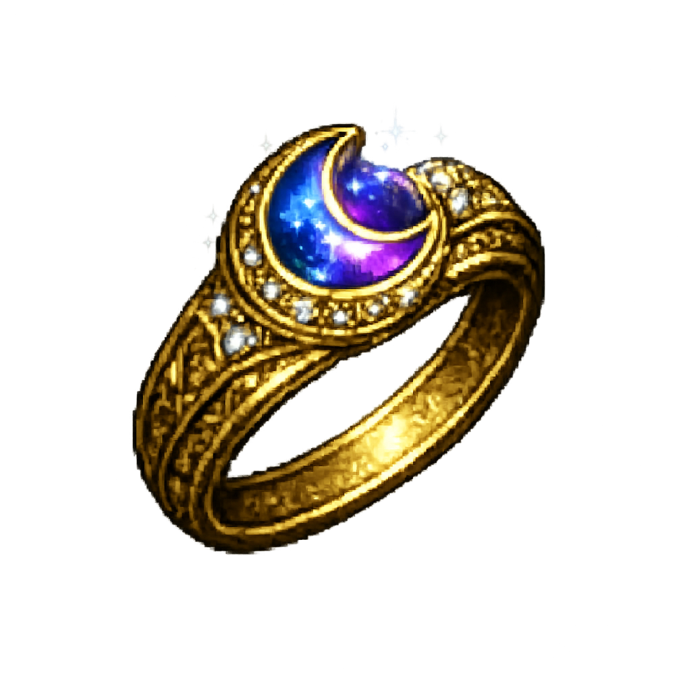
Pierścień można ulepszać za pomocą Zwojów Blasku, które możecie wytworzyć u Kowala.
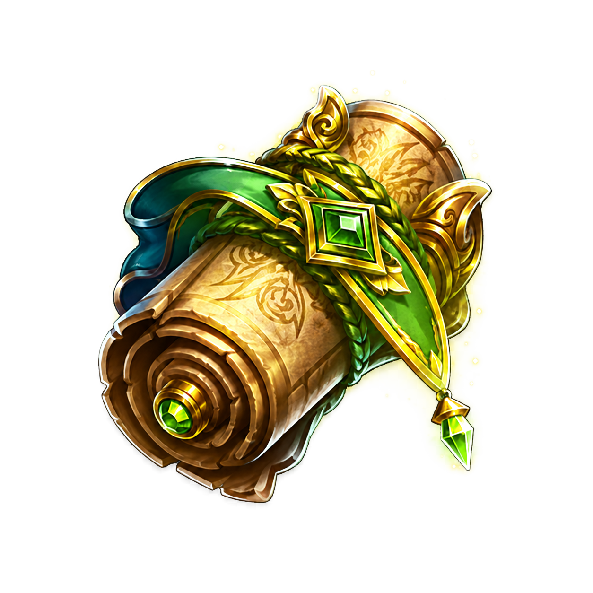
Zmieniono obecną logikę losowania bonusów na stałe ceny za każde losowanie.
| Losowanie | Koszt |
|---|---|
| 1 losowanie | 100k |
| 2 losowanie | 200k |
| 3 losowanie | 400k |
| 4 losowanie | 800k |
| 5 losowanie i każde kolejne | 1kk |
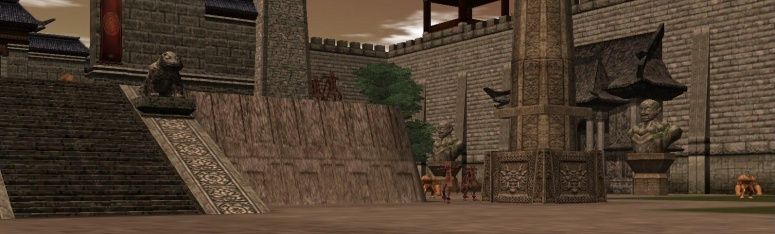
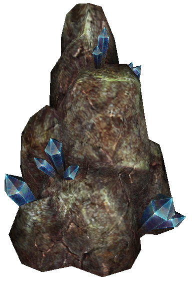
Ruda Kryształu Duszy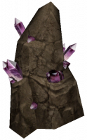
Ruda Ametystu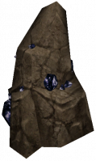
Ruda Niebiańskich Łez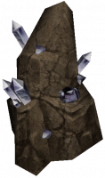
Ruda Kryształu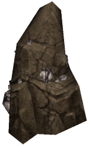
Ruda z Białego Złota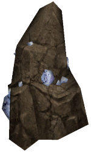
Ruda DiamentuRudy w Świątyni Hwang pojawiają się losowo co 20, 25 lub 30 minut.
Dodano Publiczną Wieżę Demonów. W tej wersji nie pojawia się Metin - aktywność służy wyłącznie do zdobywania ulepszaczy.
Zaaktualizowano wytwarzanie przedmiotów na serwerze, m.in.:
Dodano wytwarzanie Różowych Smoczych Fasolek.
Receptury u Alchemika pozwalają wymienić Zielone lub Niebieskie Smocze Fasolki wraz z Cor Draconis na Różową Smoczą Fasolkę.


00:05, 04:05, 08:05, 12:05, 16:05, 16:55, 17:35, 18:25, 18:55, 19:45, 20:25, 21:45
23:55, 03:55, 07:55, 11:55, 15:55, 16:45, 17:25, 18:15, 18:45, 19:35, 20:15, 21:35
Dodano Czerwony Materiał do dropu z elitarnych bossów. Przedmiot posiada małą szansę na zdobycie.
Do bossów dodano nowe szkatułki z osobnymi pulami nagród. Poniżej znajdziecie źródła zdobycia oraz podgląd dropu każdej z nich.

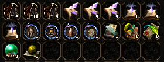
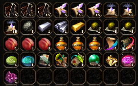
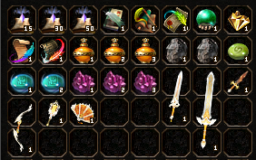
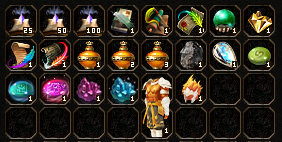
Kostiumy oraz nakładki zawarte w szkatułkach posiadają małą szansę na drop. Są czasowe na 7 dni i posiadają zwiększone bonusy.
Czas Trwania 7d
Czas Trwania 7d
Czas Trwania 7d
Do gry trafiają dwie nowe umiejętności pasywne, które wzmacniają postać na najwyższym poziomie rozwinięcia.
Na poziomie P zapewnia 12% odporności na bossy.
Na poziomie P zapewnia 100 wartości ataku oraz 100 wartości magicznego ataku.
Jak zdobyć?
Nowe pasywki pochodzą wyłącznie z craftingu. Będziecie mogli wytwarzać potrzebne przedmioty u Soona.
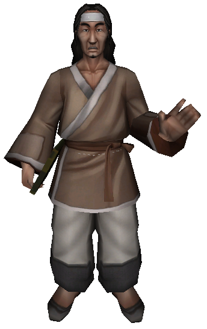
Aby wycraftować księgi nowych umiejętności pasywnych, najpierw musicie przygotować główny materiał - Urywki Strony.


Gotowe Urywki Strony możecie połączyć ze Zwojami Egzorcyzmu, Radami Pustelnika, Planami Ekwipunku oraz Yang, aby stworzyć księgę wybranej pasywki.


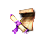